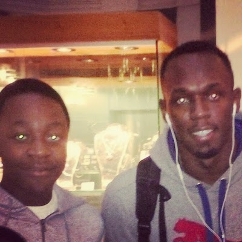

Originally from Zambia, from there I moved to Cambourne, Cambridge then Maynooth, Ireland followed by Crawley, Horley and then South Kensington
In terms of sports, I enjoy tennis, football and badminton. In terms of music, I used to play piano, I now play the guitar, and I've been playing it for about 8 years. The most famous person I've met is Usain Bolt (2014), at a hotel restaurant next to Gatwick Airport.